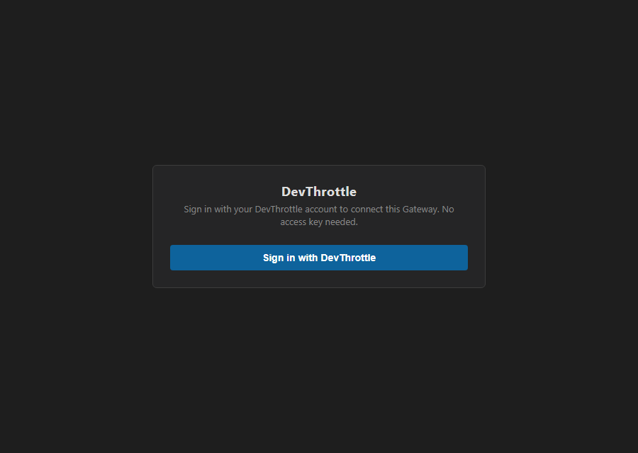

Epic #1069. Branch issue-1076-public-signin-entry. Verified 2026-07-06.
A dedicated, credential-free cloud sign-in START front door on the Gateway at
/account/sign-in-start, added to the Gateway auth public allow-list so a signed-out
browser (no cc-gateway-token cookie, no Bearer) can reach it to BEGIN cloud sign-in -
breaking the outer ring of the epic deadlock where cloud sign-in sat behind the raw
gateway-token.txt wall (/login).
GET /account/sign-in-start - a browser navigation target (Accept: text/html). Returns a
self-contained HTML front door (dark theme matching login.html). Side-effect-free: it
reads no credential, opens no browser, and its response is identical whether or not any token is
supplied, so a stray credential cannot influence it.POST /account/sign-in-start - the START action the front door submits. It kicks the
EXISTING Gateway browser loopback sign-in (GatewaySignInService, issue #637) as a
detached background task, exactly like the authenticated POST /account/sign-in (#853).
The captured token never leaves the Gateway.src/CcDirector.Gateway/Api/AccountSignInStartEndpoint.cs;
AuthMiddleware.cs public allow-list (exact-match) + doc;
GatewayHost.cs wiring beside the other /account endpoints.Scope boundary: this makes the start REACHABLE. The remote-vs-loopback redirect
mechanics of the flow are the separate follow-up (issue "0b"); here the start reuses the existing
host-local loopback mechanism unchanged. Every other /account/* DATA endpoint stays gated.
| Criterion | Expected | Actual (live Gateway, auth ON, no credential) | |
|---|---|---|---|
AC1 - sign-in entry served, not bounced to /login |
200 (or 302 toward cloud sign-in) | GET /account/sign-in-start (Accept: text/html) -> 200 OK, serves the front door, no /login redirect | PASS |
AC2 - /account/status stays gated |
401 (or 302 to /login for a browser) | JSON -> 401 {"error":"missing or invalid token"}; browser -> 302 Location: /login?next=%2Faccount%2Fstatus | PASS |
| AC3 - representative data route stays gated | 401 | GET /sessions -> 401 | PASS |
| AC4 - entry point accepts/reads/echoes no token | no token material; handler ignores supplied credential | Front door names no token, offers no field for one; unit test asserts the response is byte-identical with vs without a bogus Bearer/cookie and never echoes it | PASS |
| AC5 - log records the start reached with no credential; no credential material logged | log line present, no token | [AccountSignInStartEndpoint] GET /account/sign-in-start: sign-in start front door reached (no credential required) | PASS |
AC6 - test asserts the path is public AND /account/status is not |
test passes in CI | SignInStartAuthServingTests (real GatewayHost, auth ON) + AccountSignInStartEndpointTests; 9 new tests, full Gateway suite 1295 pass | PASS |

Full transcript: docs/cencon/proof/issue-1076/gateway-http-transcript.txt
1) GET /account/sign-in-start (Accept: text/html) -> 200 OK (front door served, NOT /login) [AC1]
2) GET /account/status (JSON) -> 401 Unauthorized {"error":"missing or invalid token"} [AC2]
3) GET /account/status (Accept: text/html) -> 302 Found Location: /login?next=%2Faccount%2Fstatus [AC2]
4) GET /sessions -> 401 Unauthorized [AC3]
5) GET /healthz -> 200 OK (public regression unchanged)
Gateway log [AC5]:
[AccountSignInStartEndpoint] GET /account/sign-in-start: sign-in start front door reached (no credential required)
[GatewayHost] GET /account/sign-in-start -> 200 (0ms) client=127.0.0.1 host=127.0.0.1:7976
dotnet build cc-director.sln -> Build succeeded, 0 Warning(s), 0 Error(s).AccountSignInStartEndpointTests (4) + SignInStartAuthServingTests (5) = 9, all pass.CcDirector.Gateway.Tests suite: 1295 passed, 0 failed (no regressions from the allow-list change).No architecture/security-doc drift: docs/cencon/architecture_manifest.yaml and
security_profile.yaml are not present in this checkout. Security rule DT-05 is honored -
no access/refresh token is read from the request, written to the response, or written to the log on
any path.
I believe this is finished. All six acceptance criteria are met and proven against a running Gateway with auth ON.